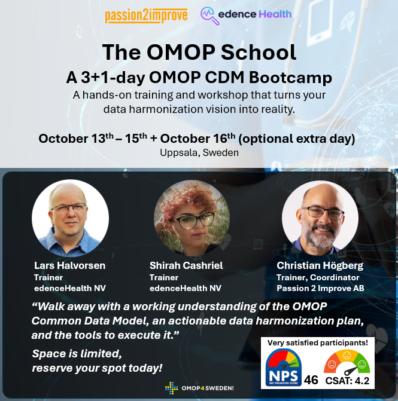

Fully booked
The OMOP School
A 3+1-day OMOP CDM Bootcamp
October 13–15 + October 16 (optional extra day) · Uppsala, Sweden
A hands-on training and workshop that turns your data harmonization vision into reality. Walk away with a working understanding of the OMOP Common Data Model, an actionable data harmonization plan, and the tools to execute it.
The course is now fully booked. You can place yourself on the waiting list by contacting Christian Högberg.
Read more about the course